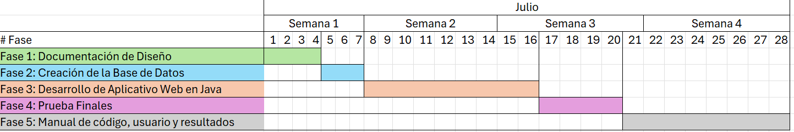

Tema
• Una aplicación de comercio electrónico que permita a los usuarios comprar y vender productos.
Cronograma de las Fases
Fase 1: Documentación de Diseño
Objetivo: Documentar el diseño de una aplicación de comercio electrónico que permita a los usuarios comprar y vender productos.
- Duchi Rivera Walter Alejandro:
- Responsabilidades:
- Coordinar las actividades del equipo y asegurar que el proyecto avance según el cronograma.
- Diseñar la base de datos y las relaciones entre las tablas.
- Crear diagramas ER (Entidad-Relación) para la base de datos.
- Configurar y gestionar la base de datos en MySQL.
- Documentar las estructuras de la base de datos.
- Tareas Específicas:
- Diseñar y crear el diagrama de arquitectura:
- Incluir las entidades principales (Usuarios, Productos, Órdenes) y sus relaciones.
- Utilizar herramientas como Lucidchart o draw.io para la creación del diagrama.
- Asegurarse de que las relaciones reflejen correctamente las necesidades del negocio.
- Configurar y crear las tablas en MySQL:
- Utilizar sentencias SQL para crear las tablas (
Usuarios,Productos,Órdenes,DetallesOrden). - Definir adecuadamente los tipos de datos, claves primarias y foráneas según el diseño ER.
- Asegurar que las tablas estén optimizadas para rendimiento y escalabilidad.
- Utilizar sentencias SQL para crear las tablas (
- Asegurar las relaciones y la integridad referencial en la base de
datos:
- Implementar restricciones de clave foránea para mantener la integridad de los datos.
- Realizar pruebas de inserción, actualización y eliminación para verificar la consistencia de las relaciones.
- Documentar la estructura final de la base de datos:
- Preparar un documento detallado que describa cada tabla, sus campos, relaciones y restricciones.
- Incluir diagramas visuales y descripciones textuales para facilitar la comprensión y mantenimiento futuro.
- Diseñar y crear el diagrama de arquitectura:
- Responsabilidades:
Patrón MVC (Modelo-Vista-Controlador)
- Sánchez Albarracín Luccy Verónica:
- Responsabilidades:
- Diseñar y desarrollar la lógica de negocio de la aplicación.
- Crear y mantener los diagramas UML (clases, secuencia y casos de uso).
- Implementar las clases y métodos principales del modelo.
- Asegurar que la lógica de negocio cumpla con los requisitos funcionales.
- Documentar la lógica de negocio y sus interacciones.
- Tareas Específicas:
- Diseñar la lógica de negocio y los componentes principales de la
aplicación:
- Identificar las operaciones clave del sistema (registro, autenticación, gestión de productos, proceso de compra).
- Utilizar diagramas de actividad para visualizar los flujos de trabajo de cada proceso.
- Definir las clases y métodos necesarios para cada entidad (Usuario, Producto, Orden).
- Crear un diagrama de clases detallado:
- Incluir todas las entidades y sus atributos relevantes.
- Especificar los métodos y relaciones entre clases de manera clara y precisa.
- Utilizar herramientas UML como Visual Paradigm o Astah para la creación y documentación del diagrama.
- Elaborar diagramas de secuencia:
- Representar los escenarios clave de interacción entre objetos.
- Incluir detalles sobre la comunicación entre las clases de negocio y las entidades de datos.
- Definir casos de uso específicos y actores:
- Identificar los roles de usuario (comprador, vendedor, administrador).
- Detallar las acciones que cada actor puede realizar (registrar, buscar productos, realizar pedidos).
- Diseñar la lógica de negocio y los componentes principales de la
aplicación:
- Responsabilidades:
Creación de Diagramas UML
- Celdo Crespo Jonnathan David:
- Responsabilidades:
- Diseñar y desarrollar la interfaz de usuario (UI) de la aplicación.
- Crear diagramas de la interfaz de usuario y sus componentes.
- Implementar los controladores que manejen la interacción entre la UI y la lógica de negocio.
- Asegurar que la UI sea intuitiva y fácil de usar.
- Documentar las pantallas de la UI y su funcionalidad.
- Tareas Específicas:
- Diseñar la interfaz de usuario y sus componentes principales:
- Utilizar herramientas de diseño como Figma, Adobe XD, Sketch, sino puede hacerlo en una hoja de papel para crear mockups de las pantallas.
- Incluir todas las pantallas requeridas (Registro, Login, Catálogo de Productos, Detalle del Producto, Carrito de Compras, Perfil de Usuario).
- Asegurarse de que el diseño sea coherente con la identidad visual de la marca y las mejores prácticas de usabilidad.
- Identificar las pantallas necesarias y crear diagramas detallados de la interfaz
de usuario:
- Describir cada pantalla en términos de diseño visual, interacciones y flujos de usuario.
- Especificar cómo cada pantalla se conecta con las funcionalidades de la lógica de negocio.
- Implementar controladores específicos para manejar las interacciones entre la UI
y la lógica de negocio:
- Desarrollar scripts o clases que gestionen eventos y llamadas a la lógica de negocio desde la interfaz.
- Validar datos de entrada y salida para garantizar la integridad y seguridad de la aplicación.
- Documentar exhaustivamente cada pantalla de la UI y sus funcionalidades
específicas:
- Preparar descripciones detalladas de cada elemento interactivo (botones, formularios, menús).
- Incluir capturas de pantalla o prototipos interactivos para ilustrar el comportamiento esperado.
- Diseñar la interfaz de usuario y sus componentes principales:
- Responsabilidades:
Documentación Detallada
- Responsabilidades Generales:
- Todos los miembros del equipo (Duchi Rivera Walter Alejandro, Sánchez Albarracín Luccy Verónica, y Celdo Crespo Jonnathan David) deben colaborar en la documentación final del diseño.
- Cada uno contribuirá con su área específica: la estructura de la base de datos, la lógica de negocio y los diagramas UML, y la interfaz de usuario y sus controladores.
Fase 2: Creación de la Base de Datos
Duchi Rivera Walter Alejandro:
- Responsabilidades:
- Coordinar y supervisar la implementación del diseño en la base de datos.
- Crear las tablas en MySQL según el diseño ER proporcionado.
- Asegurar la integridad y las relaciones de las tablas en la base de datos.
- Documentar la estructura final de la base de datos.
- Tareas:
- Configurar y crear las tablas en MySQL:
Usuarios,Productos,Órdenes,DetallesOrden. - Asegurar las relaciones y la integridad referencial.
- Documentar la estructura final de la base de datos.
- Configurar y crear las tablas en MySQL:
Sánchez Albarracín Luccy Verónica:
- Responsabilidades:
- Implementar las clases principales (
Usuario,Producto,Orden) en Java. - Desarrollar la lógica de negocio para CRUD (Create, Read, Update, Delete) de usuarios, productos y órdenes.
- Utilizar JDBC para interactuar con la base de datos y asegurar la consistencia de los datos.
- Realizar pruebas unitarias para validar la lógica de negocio.
- Implementar las clases principales (
- Tareas:
- Implementar las clases Java (
Usuario,Producto,Orden) con métodos para CRUD. - Utilizar JDBC para conectar y gestionar datos desde y hacia la base de datos.
- Desarrollar pruebas unitarias para validar la funcionalidad de las clases.
- Implementar las clases Java (
Celdo Crespo Jonnathan David:
- Responsabilidades:
- Implementar la interfaz de usuario en Java Swing o JavaFX según el diseño proporcionado.
- Desarrollar los controladores para manejar la interacción entre la interfaz de usuario y la lógica de negocio.
- Integrar las funciones de registro, inicio de sesión, gestión de productos, carrito de compras y perfil de usuario.
- Realizar pruebas de integración para asegurar la funcionalidad completa de la interfaz de usuario.
- Tareas:
- Diseñar y desarrollar la interfaz de usuario utilizando Java Swing o JavaFX.
- Implementar controladores para manejar las acciones del usuario y la comunicación con la lógica de negocio.
- Realizar pruebas de integración para asegurar que la interfaz de usuario funcione correctamente con la lógica de negocio.
Consideraciones Finales
- Documentación y Revisión:
- Todos los miembros del equipo deben revisar y documentar su trabajo.
- Walter Duchi supervisará la integración y asegurará que todos los componentes funcionen correctamente antes de pasar a la fase de pruebas.
Fase 3: Desarrollo de Aplicativo Web en Java
Desarrollo del Código
- La aplicación web debe estar desarrollada 100% en Java usando NetBeans.
- La aplicación debe permitir a los usuarios registrarse y crear cuentas.
- Crea una clase
Usuariocon atributos como nombre, email, contraseña. - Usa validaciones para asegurar que los datos ingresados sean correctos.
- Implementa el almacenamiento seguro de contraseñas (por ejemplo, usando hashing).
- Crea una clase
- Los usuarios deben poder iniciar sesión y ver su perfil.
- Crea clases para manejar las sesiones de usuario y sus perfiles.
- Implementa métodos para actualizar y mostrar los perfiles de los usuarios.
- Los usuarios deben poder publicar y gestionar productos para vender.
- Crea clases para los productos y las categorías.
- Implementa CRUD (Create, Read, Update, Delete) para los productos.
- Los usuarios deben poder buscar y comprar productos.
- Implementa funciones de búsqueda y filtrado de productos.
- Crea procesos para añadir productos al carrito y realizar compras.
- Se debe aplicar los conceptos de variables, tipos de datos, estructuras de control, funciones y módulos.
- Utiliza estructuras de control (if, for, while) donde sea necesario.
- Divide el código en módulos y funciones reutilizables.
- El código debe ser seguro y tolerante a fallos.
- Validación de Datos: Asegúrate de validar todos los inputs de los usuarios.
- Manejo de Excepciones: Implementa un manejo adecuado de excepciones para evitar que la aplicación se caiga.
Fase 4: Prueba Finales
- Pruebas Unitarias:
- Escribe pruebas unitarias para las funciones y módulos principales para asegurarte de que funcionan correctamente.
- Pruebas de Integración:
- Asegúrate de que todos los componentes funcionen bien juntos.
- Pruebas de Usuario:
- Realiza pruebas con usuarios finales para obtener retroalimentación y realizar mejoras.
Fase 5: Manual de código, usuario y resultados
Documentación de código
- Comenta tu código y proporciona una documentación que explique las funciones y módulos.
Documentación de usuario
Prepara una guía de usuario que incluya:
- Cómo registrarse e iniciar sesión.
- Cómo publicar y gestionar productos.
- Cómo buscar y comprar productos.
- Cómo actualizar el perfil.
PowerPoint
Una presentación de 10 minutos que resuma el proyecto y sus resultados.
- Resumen del Proyecto:
- Descripción general del proyecto.
- Propósito y funcionalidades principales.
- Demostración:
- Capturas de pantalla de la aplicación o una demo en vivo.
- Explica cómo funciona cada parte de la aplicación.
- Resultados y Conclusiones:
- Discute los resultados obtenidos.
- Menciona los desafíos enfrentados y cómo se resolvieron.
Puntos a calificar
- Cumplimiento de requisitos: El proyecto debe cumplir con todos los requisitos especificados.
- Calidad del código: El código debe ser seguro, tolerante a fallos y bien documentado.
- Manejo del proyecto: Los estudiantes deben demostrar una buena capacidad de planificación, diseño, implementación y documentación.